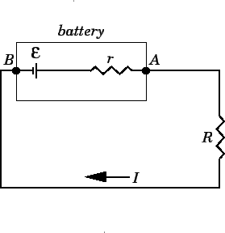

Every real battery has internal resistance that causes the terminal voltage to be less than the EMF when current flows. Understanding internal resistance is crucial for analyzing real battery behavior in circuits.
What is Internal Resistance?
Internal resistance is the resistance within the battery itself. It's caused by the resistance of the battery's internal components, including the electrolyte, electrodes, and connections.
Symbol: \(r\)
Units: Ohms (Ω)
Effect: Reduces terminal voltage when current flows
Location: Inside the battery, in series with the EMF

A real battery can be modeled as an ideal battery (EMF) in series with internal resistance.
Terminal Voltage Equation
$$V = \mathcal{E} - Ir$$
This equation shows how internal resistance affects the terminal voltage of a battery.
\(V\): Terminal voltage (volts)
\(\mathcal{E}\): EMF (volts)
\(I\): Current through battery (amperes)
\(r\): Internal resistance (ohms)
Key Cases
Open circuit (I = 0): \(V = \mathcal{E}\) - Terminal voltage equals EMF
Short circuit (V = 0): \(I = \frac{\mathcal{E}}{r}\) - Maximum current
Normal operation: \(V < \mathcal{E}\) - Terminal voltage less than EMF
Remember:
Every single time you go across a resistor (whether that be inside the battery or out), the voltage drops by the current that passes through it times the resistance
Memory Trick: Voltage Drop
Think of internal resistance as a "voltage thief":
EMF (ε): "I want to provide 12V"
Internal resistance (r): "I'll steal some voltage"
Terminal voltage (V): "You only get what's left"
Formula: \(V = \mathcal{E} - Ir\)
This helps you remember that terminal voltage is always less than or equal to EMF!
Effects of Internal Resistance
Voltage Drop
Voltage drop: \(V_{drop} = Ir\)
Energy loss: Internal resistance converts electrical energy to heat
Efficiency reduction: Less energy available to the external circuit
Current Limiting
Maximum current: Limited by internal resistance
Short circuit protection: Internal resistance prevents infinite current
Battery heating: High current causes battery to heat up
Battery damage: Excessive current can damage battery
Battery Performance
Fresh vs Old Batteries
Fresh battery: Low internal resistance, terminal voltage close to EMF
Old battery: High internal resistance, significant voltage drop
Dead battery: Very high internal resistance, terminal voltage near zero
Temperature Effects
Cold temperature: Internal resistance increases
Warm temperature: Internal resistance decreases
Performance impact: Battery performance varies with temperature
Worked Examples
Example 1: Terminal Voltage Calculation
Problem: A 9.0 V battery has internal resistance 0.30 Ω. What is the terminal voltage when 2.0 A flows through it?
Solution:
Terminal voltage equation: \(V = \mathcal{E} - Ir\)
Substitution: \(V = 9.0 - (2.0)(0.30)\)
Calculation: \(V = 9.0 - 0.6 = 8.4 \text{ V}\)
Answer: The terminal voltage is 8.4 V.
Example 2: Internal Resistance from Measurements
Problem: A battery has EMF 12.0 V. When connected to a 4.0 Ω resistor, the terminal voltage is 10.0 V. What is the internal resistance?
Solution:
Current through resistor: \(I = \frac{V}{R} = \frac{10.0}{4.0} = 2.5 \text{ A}\)
Terminal voltage equation: \(V = \mathcal{E} - Ir\)